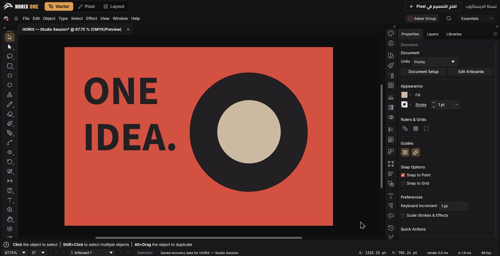
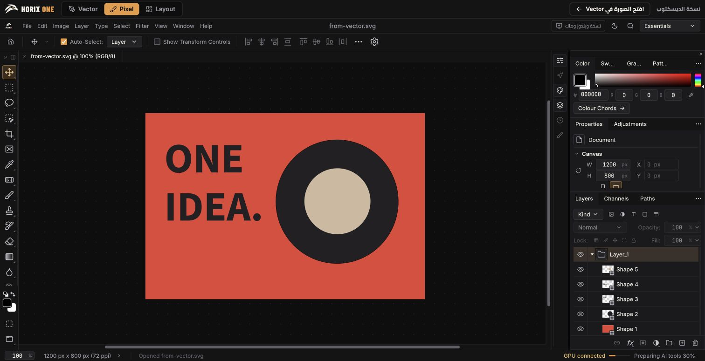

ابدأ بعلامة.
ارسم شعار، ظبّط المسارات، واشتغل على النصوص العربية. تصميم يفضل واضح مهما غيّرت مقاسه.
YOUR COMPLETE CREATIVE WORKSPACE
ارسم بالفيكتور، عدّل صورك، ونسّق صفحاتك.
تلات مساحات للإبداع، في نافذة واحدة.

01 / ONE IDEA. MORE POSSIBILITIES.
كل مرحلة ليها أدواتها. وفي One، أدواتك كلها جنب بعض.
ارسم شعار، ظبّط المسارات، واشتغل على النصوص العربية. تصميم يفضل واضح مهما غيّرت مقاسه.
افتح رسمة Vector في Pixel كطبقات أشكال، وكمّل باستخدام اللايرات والماسكات وأدوات الصور.
نسّق صفحات الكتب والمجلات. رتّب النصوص والصور، واشتغل على مستندات متعددة الصفحات.
نقل واضح، من غير مفاجآت. من Vector إلى Pixel: النصوص بتتحوّل لأشكال للحفاظ على شكلها. ومن Pixel إلى Vector: التصميم بيتنقل كصورة PNG. لكل مساحة مستنداتها.
02 / A CLOSER LOOK
اختار طريقة الشغل اللي تناسبك، وكمّل بأدوات One.
انسخ شغلك من Vector والصقه في Pixel بالطريقة المناسبة: Smart Object أو Pixels أو Path أو Shape Layer.

أدوات Quick Selection وObject Selection وSelect Subject تساعدك تبدأ التحديد، وإنت تكمّل التفاصيل بالماسكات.
اختار نسخة ويندوز أو ماك لمساحة شغل على جهازك. وللتجربة السريعة، افتح One في المتصفح من غير تثبيت.
النسخ وأحجام التحميل بتتحدّث في قسم التحميل مع كل إصدار جديد.
03 / MAKE IT YOURS
ابدأ بـ HORIX One. اختار نظام التشغيل المناسب.
حمّل HORIX Launcher، ومنه اختار HORIX One وثبّته. الـLauncher بيسهّل تحميل برامجك ومتابعة تحديثاتها.
تحميل Launcher لويندوزنزّل ملف ZIP وفك ضغطه في مجلد على جهازك.
شغّل horix-launcher.exe من المجلد.
نزّله وافتح مساحات Vector وPixel وLayout من برنامج واحد.
نزّل ملف DMG، افتحه، واسحب HORIX One إلى Applications. للتحديث، حمّل أحدث نسخة من هنا.
تحميل HORIX One لماكDMGعلى الموبايل؟ تقدر تستكشف الصفحة، ولتجربة مساحة التحرير استخدم كمبيوتر بشاشة مناسبة.
04 / THE HORIX FAMILY
One بيجمع Vector وPixel وLayout.
والبرامج المنفصلة متاحة برضه، ومعاها Light لتطوير الصور.
تعديل الصور واللايرات والماسكات.
لشغل الصور اللي بتعمله في Photoshopمسارات ولوجوهات وتايبوجرافي عربي.
لشغل الفيكتور اللي بتعمله في Illustratorتنسيق صفحات وكتب ومجلات.
لشغل الصفحات اللي بتعمله في InDesignتطوير RAW وضبط الألوان والتفاصيل.
لشغل تطوير الصور اللي بتعمله في Lightroomعلى ويندوز، كل البرامج متاحة من HORIX Launcher.
Photoshop وIllustrator وInDesign وLightroom علامات تجارية لأصحابها. HORIX برامج مستقلة من Saber Group. المقارنة بتوضح مجال الاستخدام، ومش وعدًا بتطابق كل المميزات أو الملفات.
05 / GOOD TO KNOW
إجابات تساعدك تختار
وتدخل على الشغل.
One بيجمع مساحات Vector وPixel وLayout في نافذة واحدة. البرامج المنفصلة مناسبة لو محتاج مساحة بعينها. Light برنامج مستقل لتطوير الصور، ومش جزء من One.
Vector بيصدر SVG وبيحوّل النصوص لأشكال قبل فتحه في Pixel. الاتجاه العكسي بينقل صورة PNG إلى Vector. النسخ من Vector واللصق في Pixel بيديك اختيارات Paste As. Layout مساحة لتنسيق المستندات، ولكل مساحة مستنداتها؛ النقل التلقائي مش متاح لكل أنواع العناصر.
حمّل Launcher لويندوز 64-bit وفك الضغط، وبعدها شغّل horix-launcher.exe. اختار HORIX One من قائمة البرامج، ونزّله وافتحه.
اختار macOS في التحميل ونزّل ملف DMG لـOne. المتاح يدعم macOS 11+ ومعالجات Apple Silicon وIntel.
أيوه، افتح HORIX One في المتصفح. أول تحميل لمساحة العمل ممكن ياخد وقت حسب سرعة الإنترنت والجهاز. تجربة التحرير أنسب على الكمبيوتر.
التوافق بيختلف حسب الصيغة والخصائص المستخدمة. جرّب نسخة من ملفك الأول وراجع الخطوط والتأثيرات والعناصر المهمة قبل الاعتماد على النتيجة.
استخدم روابط التحميل الرسمية هنا. لو ظهرت رسالة غير معتادة، تواصل مع الفريق قبل المتابعة، ومتُعطّلش حماية الجهاز بالكامل.
NEXT / BEYOND THE STILL
بنشتغل على أدوات للموشن والمونتاج.
لو مهتم، سجّل عشان نبلغك أول ما التجربة تتاح.
موشن وأنيميشن / مونتاج فيديو قريبًا